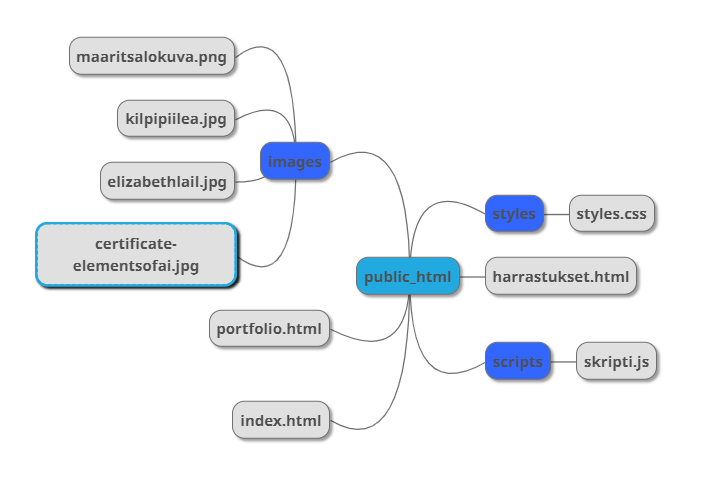
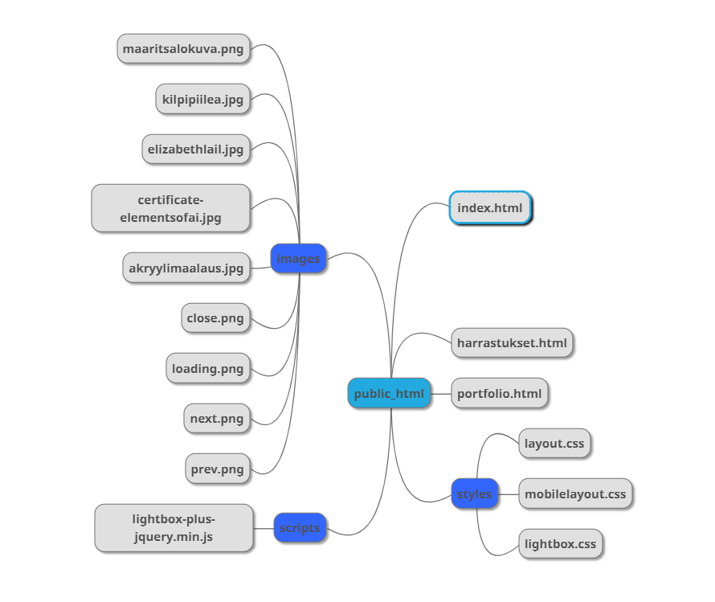

Mitä tehdään? Henkilökohtainen sivusto, jossa on myös portfolio mukana. Sivut koostuvat etusivusta, harrastussivuista ja portfoliosta. Sivuilla on kansiot kuville, tyyleille ja skripteille.
Kenelle tehdään? Kurssin opettaja, rekrytoijat, ikäluokka vähintään 20 ylöspäin mutta realistisesti ajateltuna todennäköisesti 30+. Koulutustaustaltaan henkilöt ovat todennäköisesti korkeakoulutettuja, sukupuolella ei ole väliä. Joillakin saattaa olla vain harrastetaustaa, mutta ovat osaamisen kautta työllistyneet ja rekrytoivat nyt. Pääasiallisesti sivulle tullaan todennäköisesti käymään kun haen töitä ja liitän sivut hakemukseeni. Sivuille tullaan todennäköisesti tietokoneella, mutta mahdollisesti myös puhelimella. Kurssin opettaja ainakin selvittää näkyvätkö sivut järkevästi puhelimella, ja itseasiassa tässä lopputuloksessa mobiilileiska on tavallaan jopa kivempi kuin desktopleiska, joten siihen on panostettu.
Kuka tekee? Sivujen tekijä ja vastaava on Maarit Salo
Laajuus? Sivut ovat varsin suppeat, kolme html-sivua (index.html, harrastukset.html ja portfolio.html) ja niihin liittyvät kuvat, tyylit ja skriptit omissa kansioissaan.
Mihin ympäristöön? Sivut julkaistaan Jamkin omistamalla labranet-palvelimella. Toteutuksessa kuitenkin käytetään suhteellisia linkkejä, jotta sivut voidaan pääsykoekurssin jälkeen nakata suoraan toiseen ympäristöön, kuten github pagesiin. Noudattaa HTML5 standardia.
Turvallisuus? Olen päättänyt, että sivusto ei tarvitse salasanasuojausta.
Layout/Käyttöliittymä?: staattiset sivut HTML5 avulla, layout CSS:n avulla. Javascriptillä hiukan toiminnallisuutta (Lightbox, Font Awesome, Google fontit, kts. kohta "Materiaalin kerääminen ja medioiden käyttö"), mutta sivuille ei tule ulkoisesta lähteestä dataa.
Ylläpito? Kurssin deadline on 6.6., ja pian sen jälkeen opiskelijatunnukset lakkaavat olemasta, joten siirrän tämän todennäköisesti github pagesiin. Kuvia pitää vielä rukata, ja tehdä niistä persoonallisemmat. Nyt sivut ovat ihan nätit, mutta perustuvat laajalti kurssin materiaaliin.
Materiaalin kerääminen ja medioiden käyttö?: Hyödynnän sivuillani Lightboxin kuvagallerian esitykseen tarkoitettua CSS-tiedostoa, skriptiä, ja heidän painikekuviaan. Käytän Font Awesomen skriptiä käyttääkseni heidän ikonejaan navissa. Käytän myös Googlen fontteja, joten heiltäkin tulee ulkoinen CSS. Näihin skripteihin ja CSS-tiedostoihin on viitattu html-tiedostojen head-elementin sisässä.
Tekijänoikeudet: omistan itse kaiken muun paitsi edellisessä kohdassa eritellyt asiat.
Tässä on kuva suunnitellusta rakennekaaviosta:
Ja tässä kuva toteutetusta rakennekaaviosta. Aika hyvin toteutui suunnitelman mukaisesti. Kuvia enemmän toki, kun lightboxinkin jutut tuli mukaan.
